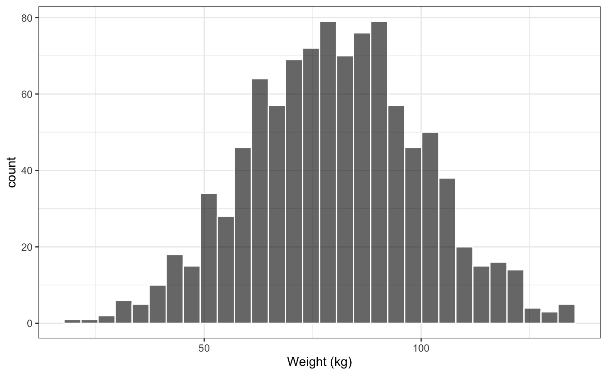

cont_hist.Rdcont_hist_list is a vectorized version
of cont_hist. pm_histogram is a generic histogram
function that is called by other functions in pmplots.
cont_hist(df, x, xs = defx(), fill = "black", col = "white", alpha = 0.6, y = "..count..", add_density = y == "..density..", ...) cont_hist_list(df, x, ...) pm_histogram(..., col = "white", fill = "black", alpha = 0.6)
| df | the data frame containing plotting data |
|---|---|
| x | the x column for |
| xs | a list of information for the x axis |
| fill | a character value passed to |
| col | a character value passed to |
| alpha | a numeric value passed to |
| y | what to use for the y-axis on the histogram; can be
|
| add_density | if |
| ... | passed to |
#>